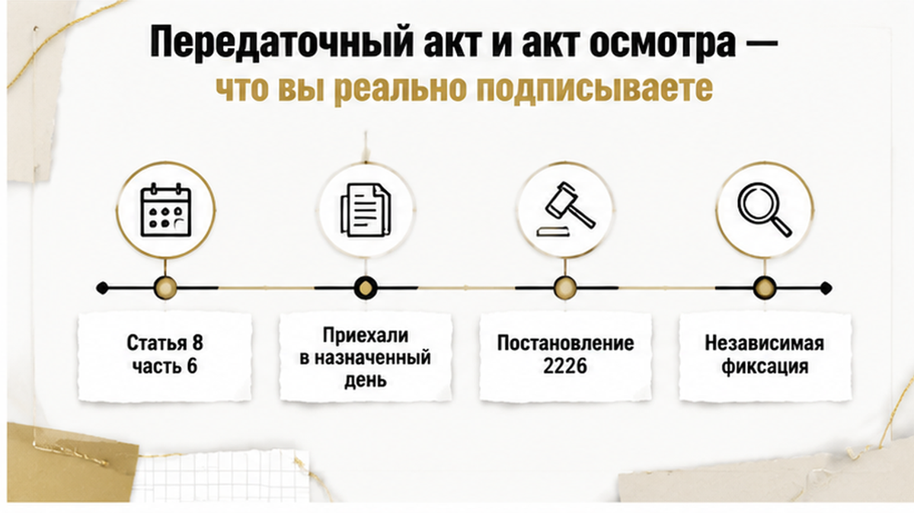
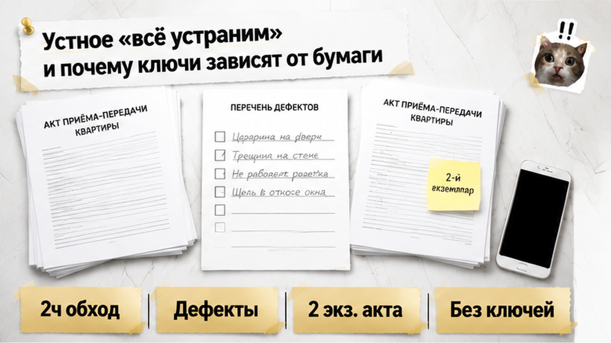
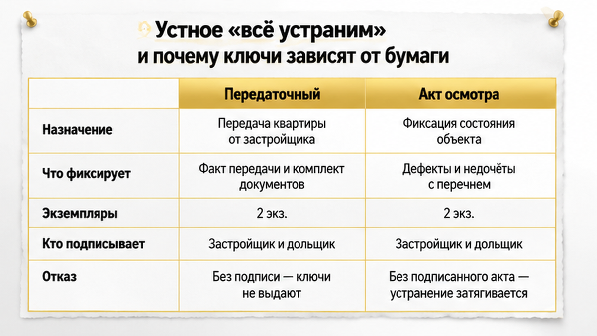
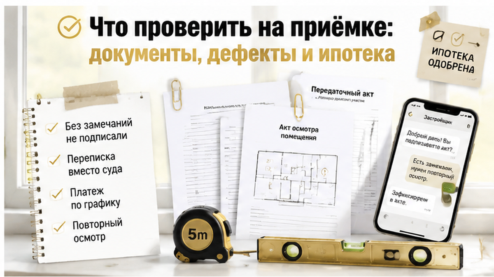

Приёмка заняла два часа, список дефектов перевалил за несколько десятков пунктов — и ключи семье в тот день так и не отдали. Двухкомнатная новостройка на севере Тюмени: ребёнок ходит по пустым комнатам, отец с приглашённым техническим специалистом идёт по кругу — перекошенные двери, продувает у окон, сколы на отделке, розетка держится в стене на честном слове, влажный угол в санузле, а отделка в одной комнате не та, что записана в спецификации к договору. Представитель застройщика вежливо соглашался почти со всем и предложил простой выход: подписываем передаточный акт «как есть», а всё перечисленное устраним потом. На вопрос про ключи ответил буднично: подписывайте сегодня, иначе ключей не будет. Семья подпись «без замечаний» не поставила — оформила акт осмотра с перечнем, записала прямо в нём отказ представителя подписывать ведомость и отсняла каждый пункт. Ключей в тот день не дали, а ипотечный платёж по графику от этого никуда не делся.
Меня зовут Святослав Шакин, я риэлтор в Тюмени, проект The Риэлтор. Расскажу изнутри, как такие приёмки разбираются по документам, а не по эмоциям.
Пишите напрямую: Telegram или MAX. Если приёмка у вас на этой неделе — лучше до неё, чем после.
Шли по кругу от прихожей: специалист замерял, отец записывал, мать снимала — комната, место, что не так, рулетка в кадре. К середине обхода стало ясно, что это не «пара мелочей к сдаче». Самым тяжёлым пунктом оказался не скол и не кривая розетка, а отделка, которая не совпала с приложением к договору: спорить о качестве — значит спорить о вкусе, спорить о спецификации — значит показывать бумагу, которую застройщик подписал сам.
Дальше начался разговор, который в Тюмени слышали сотни семей.
«Подпишите акт сейчас, замечания мы записали, бригада зайдёт и всё поправит».
«А ключи?»
«Подписывайте сегодня, иначе ключей не будет».
Звучало не как угроза, а как констатация: квартира ваша, что вы теряете.
Обычный покупатель в такой момент ставит закорючку и уезжает праздновать. Семья сделала три вещи, которые потом определили весь разговор: составила акт осмотра в двух экземплярах — комната, место, дефект, замер, ссылка на фото; записала в документе, кто и когда отказался его подписывать; сохранила фото и видео с датой в резервной копии. Ключей не дали — зато на руках остался экземпляр документа с датой, а не пересказ разговора в пустой квартире.

На приёмке кажется, что все бумаги примерно про одно: подписал — значит принял, а список приложим. На самом деле это два разных документа, и путаница между ними стоит дороже всего. Передаточный акт оформляет передачу: с этого момента квартира считается переданной вам. Акт осмотра, он же дефектная ведомость, фиксирует конкретные недостатки.
| Что сравниваем | Передаточный акт | Акт осмотра / дефектная ведомость |
|---|---|---|
| Что означает подпись | Объект передан вам | Зафиксированы конкретные недостатки |
| Что внутри | Данные объекта, дата передачи, ссылка на договор | Комната и место, вид дефекта, замер, ссылка на фото или видео, требуемое действие, срок если согласован |
| Если подписать «без замечаний» | Спорить о видимых в тот день дефектах станет заметно сложнее | Не заменяет передачу, но сохраняет перечень на дату осмотра |
| Если представитель не подписывает | Ключи обычно не выдают, спор уходит в переписку | Отказ отражают прямо в документе с указанием, кто и когда отказался |
| Сколько экземпляров | Минимум два, ваш с датой | Минимум два, ваш с отметкой о вручении или отказе |
Чистый передаточный акт плюс устное обещание бригады — это когда у застройщика есть документ, а у вас доброе отношение сотрудника, который через месяц может здесь уже не работать. Передаточный акт с приложенным перечнем — другая история: квартиру приняли, но недостатки зафиксированы на дату. А перечень без передачи — то, что вышло у этой семьи: ключей нет, зато конфликт лежит на бумаге, а не в голосовых.
И отдельно сверьте, что передаётся именно то, что описано в договоре: в Тюмени была история, где оплаченную по ДДУ кладовку на ключах просто не нашли.


«Мы всё исправим» — фраза, за которой нет ни одного обязательства, пока её нет в документе. В нормальной ведомости есть перечень, срок устранения, порядок повторного осмотра и подпись представителя либо отметка о его отказе. В устном обещании нет ни даты, ни объёма, ни фамилии. Самая дорогая комбинация — подписать акт «без замечаний», ничего не приложить и надеяться на слово человека, который вежливо кивал в пустой квартире.
Но сильнее всего в тот день ударило другое: отказ подписывать акт не останавливает ипотеку. Банк живёт по кредитному договору и графику, а не по вашему спору с застройщиком: каникул из-за дефектов не бывает, платёж придёт в свою дату. Семейная ипотека паузы тоже не даёт: одобрение кредита и открытие эскроу — разные этапы. Для города это не редкость — перенос ключей на год при продолжающейся ипотеке мы разбирали отдельно.
Отсюда правило, которое работает до приёмки, а не в день выдачи: посчитайте деньги на два-три месяца вперёд ещё дома. Вытянете аренду и платёж — у вас есть свобода спорить. Не вытянете — решение примет календарь платежей, а не здравый смысл. Представитель застройщика это понимает не хуже вас.
Подписи «без замечаний» в тот день так и не появилось. Вместо неё — акт осмотра в двух экземплярах, отказ представителя подписать ведомость, записанный прямо в бумаге с датой и временем, и телефоны, забитые фотографиями. Дверь закрыли, все разошлись. Ключи остались у застройщика.
Дальше была переписка: застройщик назначил повторный осмотр, семья готовила замечания письменно. Никакой компенсации — зато конфликт виден в документах, а не в пересказе разговора в пустой квартире.
Самое неприятное выяснилось в первые же дни: ипотечный платёж пришёл по графику. Отказ подписывать передаточный акт каникул не включает, а любая отсрочка обсуждается с банком официально — по документам, а не по кивку менеджера. Именно на этой арифметике ломается большинство людей, и именно здесь появляется подпись «как есть».
Подпишете акт с дефектами сейчас — или готовы ждать ключи ещё месяц без ипотечных каникул? Напишите в комментариях, что выбрали бы вы и почему: по тюменским новостройкам это сейчас самый живой спор.
Закон разводит две ситуации, и от этого зависит, что вы вправе делать в день приёмки. Недостатки несущественные — квартиру можно принять: подписать передаточный акт и приложить акт осмотра с перечнем, чтобы дефекты считались зафиксированными. Существенные — вы вправе не подписывать передаточный акт до устранения. Черта проходит не по длине списка: тридцать сколов не становятся «существенным» только потому, что их тридцать. Смотрят на характер дефекта — можно ли пользоваться квартирой по назначению: течёт, не греет, не запирается, не работает вентиляция, отделка не та, что в спецификации к договору. Решение о подписи принимают по тяжёлым пунктам, а не по количеству строк.
С 1 января 2026 года правила передачи изменились после постановления Правительства РФ № 2226: застройщику стало сложнее быстро оформить односторонний акт, если дольщику нужно время на независимую фиксацию. По отделке, окнам и сантехнике с 1 января 2025 года действует лимит 3% цены ДДУ — его не смешивают с неустойкой за просрочку передачи по части 2 статьи 6 214-ФЗ.
Отдельная история — когда на ключах вы получаете не то, что описано в договоре: я разбирал случай, где оплаченного по ДДУ помещения на приёмке просто не оказалось. Планировку и спецификацию сверяют с договором до того, как вообще начинается разговор о подписи.
Это бывает чаще, чем кажется, и выбивает людей именно этот момент: перечень готов, а второй подписи нет. Уговаривать бесполезно — отказ документируется сам. Прямо в акте осмотра пишете: кто отказался подписать, когда, в каком качестве присутствовал. Дальше документ работает и без его автографа, потому что зафиксирован факт: перечень предъявили в этот день.
Что должно остаться у вас на руках:
Главное — не уйти молча: молчаливый уход выглядит как уклонение от приёмки, а это уже другая история с другими последствиями. Ваш отказ должен быть письменным и мотивированным — не «нас не устраивает», а перечень конкретных недостатков и требование их устранить.
Давление на документах — отдельный жанр. Я разбирал случай, когда дольщикам прислали новые бумаги и попросили подписать быстро. Правило и там, и на приёмке одно: любую позицию излагаем письменно и отправляем так, чтобы отправку можно было доказать.
«Не подпишете — оформим односторонний акт». Эту фразу произносят спокойно, как приговор, и работает она по одной причине: покупатель не знает, из чего эта норма сделана. В части 6 статьи 8 214-ФЗ право передать квартиру односторонним документом у застройщика правда есть — но не в любой день, когда вы не поставили подпись. Норма про уклонение: участник не приходит и не отвечает без объяснения причин, в том числе два месяца молчит после уведомления о готовности. Приехали в назначенный день, обошли квартиру, составили перечень дефектов и письменно объяснили, почему не подписываете передаточный акт, — это не уклонение, а ровно та процедура, которая и должна быть.
Разницу проще проговорить дома, до приёмки. Не прийти и не ответить — одно. Прийти, сказать вслух «нас не устраивает» и уйти без бумаги — почти то же самое: от разговора не остаётся следа. С 1 января 2026 года правила передачи изменились с учётом постановления Правительства РФ № 2226 — быстро оформить односторонний акт застройщику стало сложнее, если дольщику нужно время на независимую фиксацию недостатков. Только «независимая фиксация» — это осмотр со специалистом и документы, а не пауза на подумать: сроки из договора и правил передачи никто не отменял. Логика давления та же, что и с внезапными новыми бумагами «на подпись сегодня»: расчёт на то, что человек не станет читать и фиксировать.

Приёмка выигрывается не в квартире, а за неделю до неё — когда вы собрали папку и заранее решили, что ответите на «подписывайте сегодня».
Отдельно сверьте площадь, комплектацию и все помещения, которые вы оплатили: расхождение всплывает именно на ключах — как в истории, где оплаченной по ДДУ кладовки в доме просто не оказалось. Дорогие ошибки повторяются из года в год: подписать «чистый» акт под обещание «исправим потом», оставить список только в переписке, уйти, ничего не направив письменно.
Разбираю приёмки по документам, а не по эмоциям. Идёте принимать квартиру в ближайшие недели — заходите: Telegram или MAX. Скину, что взять с собой и как выглядит акт осмотра, который не стыдно предъявить.
У этой семьи ручка была ещё до дня приёмки. Они приехали со спецификацией, чек-листом и специалистом — поэтому «подписывайте сегодня» не сработало, а разговор ушёл в переписку и повторный осмотр. Ключи задержались, зато на руках акт осмотра, зафиксированный отказ, фото и замеры. У того, кто подписал «без замечаний», нет ничего, кроме доброго слова сотрудника.
Поэтому решайте дома. Посчитайте свой месяц ожидания, спросите банк, что он реально даёт при задержке передачи, заранее определите, какие дефекты для вас существенные, а какие примете с приложенной ведомостью. Тогда в день приёмки вы не выбираете между «подписать всё» и «сорваться» — вы спокойно делаете то, что уже решили.
Материал проверен редакцией The Риэлтор.